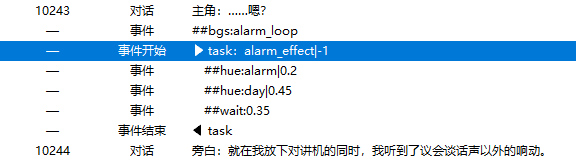
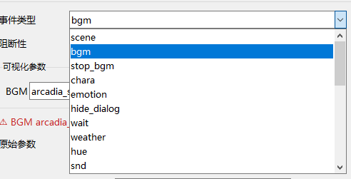
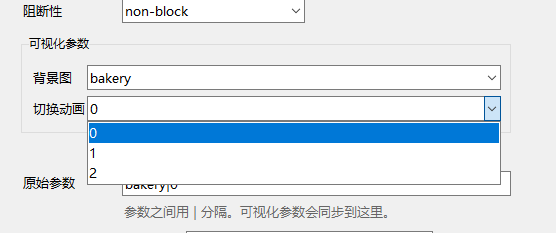
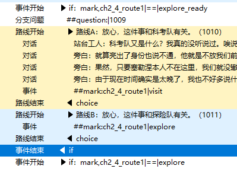
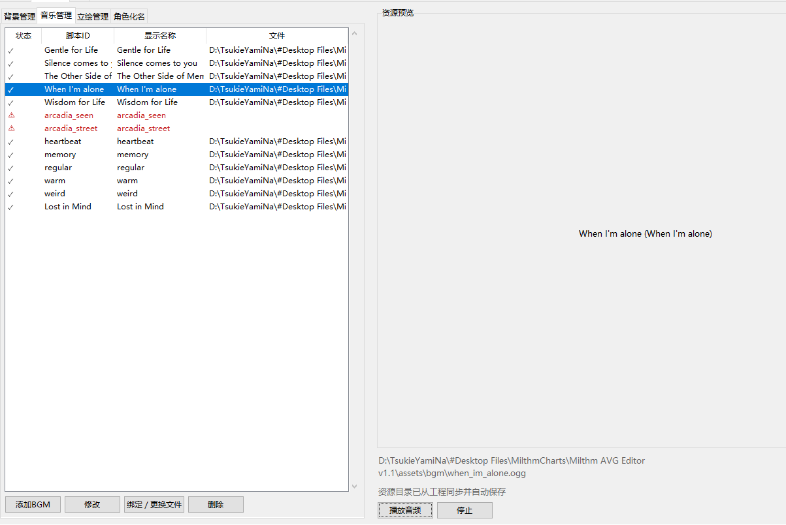
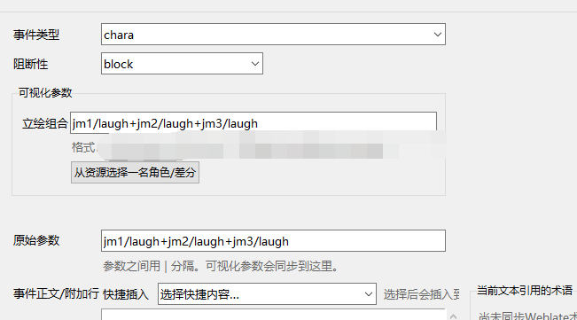

2026-10-14 14:12图片动态图文
转发 0 · 评论 0 · 点赞 18
答案居然就藏在我最相信但一直都没能真正理解的牌面里
https://www.bilibili.com/opus/1258940504603623432原动态链接答案居然就藏在我最相信但一直都没能真正理解的牌面里
https://www.bilibili.com/opus/1258940504603623432原动态链接分享动态
原动态链接以后某音游出点啥破事全赖我身上得了
https://www.bilibili.com/opus/1257650249204236294原动态链接关我屁事
https://www.bilibili.com/opus/1257644949205155845原动态链接分享动态
原动态链接vought international
保护海洋！从每一根触手开始！
5300 播放 / 1 弹幕 · 00:57
https://www.bilibili.com/video/BV1Ge4y1q7rk分享动态
原动态链接奥黛塔因为自己表演的时候没有发挥好（自认为的）而闷闷不乐，沃雅妮莎察觉后就想了个招让奥黛塔开心，同时也能提升小雪鹄的自我认同感。沃雅妮莎可是很努力让自己输呢，这样奥黛塔才能开心（才不是因为真比不过奥黛塔）
沃雅妮莎：不愧是我，我的跳舞女要一直开心下去！
借物表
模型：miHoYo
剧本/动画：叶玲秋雨
后期：wjxmth
人物渲染预设：Festivity
BGM：凑热闹
138.6万 播放 / 846 弹幕 · 02:46
https://www.bilibili.com/video/BV1U4Hr6HEqw1562 播放 / 0 弹幕 · 05:03
https://www.bilibili.com/video/BV1gNak6QEQr原动态链接Milthm请停止日夜骚扰我身边的朋友，你们怎么做这个游戏是你们自己的事情，我有自己的日子要过，我并非为了Milthm而活
另外这条写给我的列表：如果某人跟你打听我最近的“动向”，请让他亲自找到我，别把别人当传话筒
这黄键蛇这么敢写
原动态链接-
2166 播放 / 0 弹幕 · 15:20
https://www.bilibili.com/video/BV1ofaR6AEi2482 播放 / 0 弹幕 · 05:13
https://www.bilibili.com/video/BV1gyaJ6oECM原动态链接632 播放 / 0 弹幕 · 03:07
https://www.bilibili.com/video/BV1j5an6KETt原动态链接冰冻僵尸和冰柱……好爽……
https://www.bilibili.com/opus/1253378977229176832原动态链接歌曲：cybermiso (https://x.com/cybermiso)
画师：雨生種
文案：杉原夜季
视频：灼穆
@RhythmicCommons
本歌曲归属RhythmicCommons社团的故事专辑《Mediacara》。
_______________
『十之倾斜 ①』
云还尚在这层楼的更上方。
哪怕只有几秒也好，我想要飞翔于空中。伴着雨、伴着光。
这样的念头，在我的心中泛开涟漪。拥抱自由。
既然真正的个体自由意味着违背社会的运行方式，而人类又无法脱离社会生存……
是否，一跃而下成为了我仅有的选择？
事实上，这座城市从来都充满了生命。
雨，仍在下着。微弱的小雨，不起风浪。甚至有许多人不愿打伞，就这样顶着个公文包，甚至冒着雨走向电车站。
既然是如此充满生命的地方……
……又为何，是如此死寂？
我无法听见声音。
行人在人行通道与我擦肩而过。我感受得到他们的存在，他们感受得到我的存在。
除此之外，再无瓜葛。这或许是我与他们此生的最后一次见面。
甚至……就算见到了第二次，也不会回忆起第一次。
对于所有人类而言，几乎……都会是如此。
人的一生会与多少个人相见？几万？几十万？几千万？
最后，你记住了多少人？
最后，多少人记住了你？
冰凉的雨露，打湿了我的肩头，沾湿了我的长发。
我也是没有打伞的人啊。
毕竟……
若是打了伞，就和这场雨产生了无可弥补的隔阂。
我不愿这种事情发生。
大楼的顶端，我再度望向脚下的城市，这座充满生命的，死寂的钢铁森林。
最后，我会后悔忘却了谁？
最后，我会庆幸记住了谁？
最后，多少人会因记住了我而感到悲伤？感到幸福？感到绝望？
就好像我已经迎来了我的最后。
我是无法打伞的人啊。
亿万的雨滴都在缓慢地朝上飞行。这座城市的光与影，呼啸着自我的耳畔疾驰而过。
这是我所听到的风、我所看到的雨。
我能够一眼望见属于我的这片世界的尽头。世界否定了我曾划分为“真理”的许多信念。
而我也因此确认了，我的生命中存在着那么唯一一件事物，它无法被推卸——它会指引我前行。
并非“此处为梦境”这一事实，它无从为假。
并非“此处为现实”这一幻象，它无从为真。
雨的光影。
风的呼啸。
我能瞧见每一滴雨珠的轮廓，我注意到它们其内折射的来自于灯火的光谱。像是包裹着这整座城市各个角落的水晶球。尽管渺小，却并非微不足道。
每一段人生，每个人的人生，都是无价的。
秋雨依旧。
我向着夜空飞去。
我拥抱着：世界的希望。
2926 播放 / 0 弹幕 · 02:19
https://www.bilibili.com/video/BV1AMae6mEjF原动态链接创立一款非商业音乐游戏，为你的团队执行一些（经过无限简化后的）运营操作。
你是否有能力将这款游戏的游玩人数提高至100,000人？
https://tokumei.studio/n-cryos.html
————————————————
☆ 游戏运营
☆ 团队维护
☆ 自我提升
☆ 机制特色
————————————————
对于模拟器的反馈与建议可留言在评论区~
也能发送邮件到：yukidare2766@gmail.com
特别感谢帮助我测试了 alpha 超过 70 个版本与 beta 超过 60 个版本的各位群内小伙伴们~
你们的建议为我提供了大量的游戏灵感，最终成就了这款颇有意思的模拟器！
特别感谢《梦见霖音：Milthm》与Milthm制作组的所有人，以及Milthm二创馆的大家~
模拟器中藏了一些有关Milthm的小彩蛋，试试来挖掘吧！
https://www.bilibili.com/opus/1252753032965259272原动态链接何时想起，一直在另一个世界默默等待的那个【她】，是否随着你的记忆...慢慢模糊...
曲目：電子の海
编曲/混音：QtS、MoryueCi
母带：MoryueCi
所属社团/厂牌：Rhythmic Commons
插画绘制作者：Tendin
视频制作：X-chalk
歌词大意：
電子の海 消えかけたログ 君の手を離さない 終わる世界 歌てる
在电子之海中，即将消失的记录里，我不会松开你的手，终结的世界正在歌唱。
夢の火消せ
夜の記憶が遠く
梦之火，熄灭吧；
夜色之中，记忆已渐渐远去。
1432 播放 / 0 弹幕 · 02:56
https://www.bilibili.com/video/BV1QiaK69EkF原动态链接梦境……
是指，这样的世界？
既是在做梦，无非我处于梦中世界——我如此告知自己。
甚至无需怀疑。
尽管我总是喜欢自我怀疑、质疑我亲眼所见的一切事物。
但此刻，却没有这个必要了。
事实摆在我面前。
“事实并非真实的事实”的事实摆在我面前，甚至连反驳的空间都不存在。抗拒它则是自欺欺人。
绝无分毫“真实”的可能，无关我意识的清醒程度。
甚至失重也无法将我直接唤醒。为什么？因为我甚至无法感受到重力。
我失去了重力。不……是重力不再能捕捉到我。
我已不再遵循世间常理。
因此，这一切也仅能发生于一场梦境。
人类是不会觉醒超能力的。因此，此处仅能是梦。
设问梦的开端？我不记得哪怕十数秒前的画面。梦是什么时候开始的，我又该从何摸清。
却在这种荒唐的场景下令我无比确信，这是现实世界的延展。
而且我的思维实在是过于清晰了，清晰到恐怖，清晰到我能够一眼望见属于我的这片世界的尽头。
以至于我能在短短十秒内获取如此宏大的信息量。
甚至下方那座城市的许多细节。
无关紧要，无非向我证实了我所坚信的一切。许多人所坚信的一切。
我多么希望我所坚信的这一事实是虚假的。
并非“此处为梦”这一事实，它无从为假。
并非“此处为现实之延续”这一猜想，它无从为真。
是“别的事情”。
为什么？因为这座城市实在是太令我熟悉了。哪怕是梦让我误以为我自由便生活于此，那我也绝非第一次见到这座城市。
若是在梦中屡屡见到相同的场景，这不就是存在于我梦中的，属于我的“第二存在处”吗？
自此，有关这是否为我于现实中生活之城市的议题——无意义化。
@RhythmicCommons
Milthm主线第2章《因你而存在的理想国》约曲揭秘：曲师都知道些什么？！
注意， 包含剧透！包含剧透！
还没接触过主线第2章内容的，记得别点开看！
-
-
-
-
-
-
-
-
-
Otokaze（Dear）：
只知道世界观与第二章大致梗概。
不知道第二章结局。
Se-U-Ra（Rustala）：
知道自己的歌曲在第二首，并且知道第三首是uma。
知道Milthm截至2-3的对应剧情与城市的大致设定，保留了对后续剧情的未知感。
uma（Recall Memories）：
知道自己的歌曲在第三首，并且知道第二首是Se-U-Ra。
围绕“闪电”进行创作的曲子。推荐大家了解一下uma曾经为pop'n music创作的歌曲《Caradbolg》！
知道Milthm截至2-6的对应剧情与城市的大致设定，保留了对后续剧情的未知感。
ryhki（Tales of Misery）：
知道自己的歌曲在第五首，并且知道自己将要创作高难度歌曲。
致力创作出了那种“读了前面剧情的玩家绝对猜不到的后面反差的发展”这种感觉
的歌曲。
知道会有一位重要角色在自己的歌曲进行过程中，在玩家的眼前逐渐死去。
ADA（Equinox）：
知道自己的歌曲是大魔王，并且知道除2-11/2-12外的全部剧情（ADA被刻意隐瞒了塞勒涅会死去的事实，所以他也不知道塞勒涅会不会得救）。
知道前面五首歌曲负责者都是谁。对最终歌曲的信息一无所知，只知道后面还有一首歌。
RoughSketch、两位vocal老师Aikapin和Chiyoko 、作词老师オヌマ愛子（La Fouldre）：
知道第二章的全部内容，以及前面的全部六首歌曲负责者都是谁。
另外，Equinox和La Fouldre这两首歌曲的标题其实都是我起的！
La Fouldre的作词老师认为这个标题相当合适，欣然采用了《La Fouldre》作为歌曲名称。
如大家所知，我负责了：
完成剧情对接后，我深知剧情组的新成员在接手工作后会变得相当痛苦（显而易见的理由！），所以我给Milthm制作组的剧情负责人员留下了一份剧情编辑器。
（原先第一章、第二章的AVG模式剧情实现，几乎都是Buger404手搓达成，404基本背下来了所有角色的所有立绘差分、所有动画背景、所有可用的BGM……考虑到这种办公方式实在太累了，我就留下了这个编辑器）
编辑器基本基于Codex进行制作，无自然纯添加！来跟大家分享一下它的功能。
可以对对话条目进行修改。每一条对话都有一个专属id，无法重复。创建条目将会给新条目自动附带一个新的专属id。
调整对话顺序后，对话专有的id不会改变：
可选择不同的角色（角色通过资源管理界面增添）：
可选择立绘差分（同样资源管理界面增减）：
选择“名称显示为问号”后，角色姓名将强制显示为“？？？”
其中角色本名无法修改，每个角色的所有化名公用同一个本名。
另外，当前的对话会有一张简单的预览（与游戏中看到的会有细微差别）：
预览使用的背景根据先前最后的“背景”事件决定，无法瞬时修改。
文本支持特殊输入：

除了对话外，也能够创建事件。可选择事件类型：

诸如bgm事件等部分事件，可直接从资源中选择可选项目：
以及先前提到的“背景选择事件”：

创建分支路线后，最左边会显示路线编号。不同的路线会用不同的颜色区块涂色。
“路线开始”事件与“路线结束”{事件必须配套出现。
可以设置“mark”事件来给玩家施加一个临时的tag。该tag会在本段剧情结束后自动失效。
通过if事件进行条件判断：

剧情中出现的基于mark（tag）的if事件实例：
众所周知，Milthm使用伟大的Weblate管理本地化翻译。
编辑器同样可以关联Milthm的Weblate：
最难制作的部分来了，比对话管理要难一万倍
如图所示，可管理的资源主要分为背景、音乐、立绘、化名四类。
可进行资源的删减、重绑定、预览：
可拖拽修改子窗口的宽度：
音乐预览界面点击播放音频后，音频在关闭切换界面时不会消失，并且会自动循环播放，营造写剧情时的真实BGM体验：

角色立绘管理界面是最复杂的：
每位角色可以拥有数种立绘套装、每种套装下可分为不同的立绘差分。
可以提前创建差分占位符，并且在后期进行美术素材补充。另外，也能给立绘差分设置自己想要的别称。
可对角色化名进行管理：
众所周知，Milthm其实有一整套的世界观，而且不想让剧情负责人员出去到处翻文档，所以我内置了一个百科页面：
通过“站点”进行分类，每个站点内有不同的词条。
还可以在里面阅览苏联历史……？（不对，放这种东西进去是要做什么？）
我给后面的写手留下了一大溜串的百科词条，也让他们不需要在之后需要用时到处找人问了。
另外，不想在编辑器里查看的话，也可以按一下按钮，一键导出全部百科：
百科跟随设备进行保存，即时编辑即时保存，“立即保存”按钮只是安慰剂。就算切换了工程，或者忘记按CTRL+S，百科也不会丢失。
可以对全百科范围进行关键词检索：
点击检索结果后，将自动跳转到对应的页面，并关闭搜索页面。
结语
Milthm截至主线第二章的所有AVG模式编辑基本都是Kozak老师手打、我直接对着全文档修/标注、404对着文档脑补设计场景/进入游戏预览核实效果。
老一辈的苦日子谁懂啊，所以我觉得我不能在携手Kozak老师，把剧情的表现力和设计难度拉上去之后，又直接撒手把后续工作交给完全的新人。
这个编辑器是我能为剧情组留下的我认为最好的遗产。

不知道上面我分享的这些设计思路会不会为其他制作组带来灵感，Codex的功能很强大！
将AI当成制作实用工具的实用工具，可能会比将AI当成直接使用的实用工具要更好一些也说不定？
https://www.bilibili.com/opus/1251176921710985219原动态链接我之前走的时候给Milthm谈好了数场联动。
一场是和国内赫赫有名的大非商。双向。
一场是和玩家从mil开服就期待已久的同样也是精品非商。双向。
一场是和mil已经合作过一次的小有名气的非商。双向。
一场是和一款国内的街机音游。双向。
一场是和比Arcaea年龄还要久的国产商业音游。双向。
一场是和台湾新兴的PC商业音游。双向。
一场是国内崭新出厂的PC商业音游。双向。
一场是以日系主题知名的日本商业音游。双向。
附带一场和国产的著名二游的联动。
除此之外还有数场和新兴非商音游的联动。
以及更多联动。
目前已经有两场公开了，不知道这些联动有多少有幸落地。
由于本人现在已经不再属于这个制作组，终于有些设计思路可以分享出来了。不过可能会涉及日后剧情剧透的元素，我还是会藏起来的……！
来和大家分享一下Milthm主线第二章《因你而存在的理想国》主线标题的考据~
虽然说这次的起名其实特别直白，没有什么特别好分析的，但放在动态里也放不下，就单独开了个专栏。
首先放个参考在这里方便回顾：
其实这里的12个小节标题都有直接参考某款20年前的著名游戏（著名吗……？）
这样看还是有些太抽象了，所以我们不妨先瞧一瞧这12个小节在英文语言下的标题：
我看过好多好多的Milthm剧情实况，包括追梦者在内，有好几位up在游玩过程中已经发现了第二章的故事与设定与某部游戏很像：
《地铁2033》
事实上，Milthm主线第二章的全部12个小节，全部都来源于《地铁2033》与《地铁：最后的曙光》中的标题原文。
那我为什么会选择现在的小节名呢？
失去了人类的城市已被无情的大自然夺回。
虽由废墟与残垣组成，雨中的郁郁葱葱的遗迹显得生机盎然。
此为这颗星球并不需要人类存在的证明。
我与露薇娅在这座城市探索许久，甚至来到了因百年来的下沉所创造的地势最低点。
我们何尝能够想到，我们竟是在那座真正的城市顶端行走。
这里汇聚了辽阔的荒原中最有价值的事物。
他们发展了科技、他们产出了粮食、他们存续了娱乐。但这里或许也只是存在于泡沫中的理想国——
这座城市的选址，从一开始就是个错误。
那是我们在这座城市度过的第一夜。
我们并不知晓这些人是否能够信任，但更像是别无选择地：首先，感受到那些能令我们感到美好的事物；其次，再担忧未来的不确定性。
只要有她陪在身旁，这段旅途就一定是正确的。
分离不是为了享受孤独，而是为了更幸福的重逢。
阿卡迪亚这座城市虽然暗流涌动，却没有被卷入战火。
在这种至少表面和平的年代，真正位居前线的便是那些为了守护一般人的日常而奋不顾身的幕后人员。
我们因为他才会踏上旅途，但我们的旅途不会因他而停止。
这不仅是因为我们有着第二个目标——只消确认了他的心跳，我们就能够明白这世界并未死去。
带着苏珊寄托给她的“名字”，我们得以寻见前路的道标。
无论多么生机盎然的森林，若是没有飞鸟走兽，那便属于不和谐的迹象。
并没有人类活动的都市，真的算作死城吗？不会有任何生物死去的城市，真的算作死城吗？
不符合规律与逻辑的事物，总是能打得所有人措手不及。任凭做足准备也于事无补：因异常现象本身就是为了打破准备与规则而诞生。若是不造成恐慌与破坏，异常现象就永远不会被命名为“异常现象”。
更令人绝望的是，“意外”的发生永远都是“必然”，否则就根本不会存在“意外”这个词语。
她一直都知晓自己追逐的人不会再回来。但她依然会这么做。
因为她不会原谅那个没有这么做的自己。
哪怕是这样的可能性存在，都会使她恨透自己一辈子。
为了那座高塔，牺牲了多少物资、多少时间、多少生命？
为何要在这时候停止前行？
那明明已经成为了世界最高的塔。
月亮甚至已经得以瞧见它改变世界的那一天到来。
高塔倾倒之时，终究能使希望残存。
星光湮灭之刻，我们将会回归高塔。
星星不可能是漆黑的。正如“意外”不可能不打破“准备”、“死亡”不可能不寄托于“生命”。
若是瞧见了那颗漆黑的星星，我们将会停下脚步，我们将会思考。
或许，只有颠覆了一切，我们才能拯救这片理想中的净土。
阿卡迪亚从一开始就并不存在。一切的一切，只是月亮的一场美梦。
但没有关系——因为，我身边的这位女孩，能让做梦的人醒来啊。
我们不需要月亮。
月亮帮不了任何人。
但若是失去了月亮，在夜晚——我们如何才能确信太阳依然存在？
太阳是无比耀眼的存在。
分离不是为了享受孤独，而是为了更幸福的重逢。
在无限接近太阳的那一天，我们又将……
Milthm的主线第二章并未在第12小节结束——这显而易见。
要不要猜猜看，剩下几个小节会选什么标题？
https://www.bilibili.com/opus/1249826021340872710原动态链接百感交集。
未来会变成什么样，谁能猜得到呢？
我这里之后大概率会加入一个现存的非商业音乐社团（先保密）！会开一张新的剧情专辑。
任何已经在应用商店发布正式版的非商业音乐游戏，都可以免费从我这里获取这张剧情专辑内的授权。（但是有可能不会提供封面，因为我不会画画！）
部分我曾经约到的曲师已不再接稿，或许这些歌曲的存在也能帮助一些音乐游戏圆了“收录xxx歌曲”的梦想。
Q：可以选择的歌曲数量多吗？
其实不会太多，主要性质是“存在即可”，而且打算与现存的另一家著名社团做不同路线，应该不太会有重合面。
其中，部分曾经我所购买的已公开歌曲，如沟口老师的《Myth compiler》等，在事成后也将通过这个社团进行授权 。
Q：会有版权纠纷吗？
A：这个社团里的曲子和“无所属游戏”基本没什么区别。
如果你不放心，可以带着合同来获取授权。
Q：为什么要加入这样的社团？
A：不想浪费艺术家辛苦创作的曲子，将歌曲收录于这个社团也获得了曲师们的支持。
分享动态
原动态链接她的“心”筑起高墙，
不是为了拒绝别人，而是为了不让自己需要别人。
在乎，便意味着为痛苦留下一扇门。
每一颗爱人的心，都接受了被打碎的可能。
“心”并不害怕受伤，
只害怕它们来自所爱之人，
有些话之所以锋利，只因说它的人对自己太过重要，
只有愿意接受你的那颗“心”的人才会知道
“你给了我离开的所有理由，可我还是选择留下”
因为爱既赋予另一个人伤害自己的能力，也赋予自己原谅他的勇气。
4.6万 播放 / 184 弹幕 · 06:22
https://www.bilibili.com/video/BV1TgY56BEQg转发动态
原动态链接互动抽奖 #原神# #原神音乐# #悯宥慈怜之垠#
亲爱的旅行者，《原神》至冬篇OST《悯宥慈怜之垠 Where Mercy Endures》正式上线。
欢迎旅行者前往QQ音乐、酷狗音乐以及Apple Music 搜索《悯宥慈怜之垠 Where Mercy Endures》收听完整版OST。
专辑分为《漫卷霜色 Swept in Frost》、《无终之途 The Endless Road》、《无忧的恬怿 Untroubled Bliss》与《恍影憧憧 Shifting Shadows, Wavering Minds》4张分碟，共收录102首由HOYO-MiX音乐团队为《原神》至冬地区创作的原声音乐。
关注@原神 并转发，我们将随机抽选10位旅行者赠送【交响入梦系列帆布包】1份。
本次活动将于9月21日14:00开奖，请关注官方消息。请旅行者于开奖后15日内提交获奖信息（逾期视为自动放弃奖励）。
分享动态
原动态链接分享动态
原动态链接我为《梦见霖音：Milthm》留下了两株特殊的作物。
下一次更新露晓卉庭模式，会加入新的野生作物“蒲公英”与“白花酢浆草”。
在这里由衷祝愿选择离开Milthm制作组的前成员们，能在新的花圃落地生根、绽放花朵。
也希望三叶草能为留在Milthm的成员们增添好运。
很多事情确实没有找到完美的解决方案，在这里希望大家能给予的也只有时间。
转发动态
原动态链接互动抽奖 #原神# #薇斯纳# #雪宴之锋#
▌雪宴之锋 · 薇斯纳
巡风执令，明光镇雪
==========
「如果我的餐盘里突然被换上了柠檬片，茶杯底被画上了涂鸦…不用大惊小怪，直接无视就好。对这些恶作剧的反应越大，躲在暗处的她兴致就越高。」
——女仆长达妮卡，对至冬宫新任女仆的提醒
在至冬，「丝翠维莎」是一个不容忽视的姓氏。
这支古老的风仙血脉早在至冬动荡未定之前起便已存在，跨越过无数风雪，承载着无数荣耀。
薇斯纳显然担得起这个姓氏。她明艳照人，从容得体，举止优雅，风度翩翩…在大多数时候。
随心所欲的薇斯纳从不被他人制定的礼数束缚，率性而为的她也常有不拘一格的惊人之举：有时是将火车开出足以喜提禁令的残影，有时是往同僚的餐盘里塞点精心挑选的酸柠檬片…
但不会有人因此质疑薇斯纳的高贵，她的荣耀从不浮于礼节与装饰，只寄托于锋刃之上。
「冬契军」是女皇亲执的剑刃，而薇斯纳更是其中最锐利的剑锋。
在风仙之中，薇斯纳的年纪并不大，甚至有些过于年轻。初入「冬契军」之际，她曾被称作「丝翠维莎家的小姑娘」，不过这个称号很快就随着她的身手与功绩被人忘却。
直到她正式接过「冬契军」总司令一职时，「薇斯纳」的名字，就已经耀眼到足够让人忘掉后面的「丝翠维莎」了。
历经数代，这个不容忽视的姓氏，终于再次迎来一个更不容忽视的名字。
或许对薇斯纳自己而言，她的荣耀所在，并非家族的姓氏，也非傲人的天资，而是她自身不变不移的信念：
为了女皇，为了至冬。
从过去如此，未来亦如此。一如古老的冰川，不论多么善变的风，都无法更易。
==========
关注@原神 并转发，我们将随机抽选10位旅行者赠送【原神随机周边】1份。
本次活动将于8月24日14:00开奖，请关注官方消息。请旅行者于开奖后15日内提交获奖信息（逾期视为自动放弃奖励）。
转发动态
原动态链接互动抽奖 #原神# #沃雅妮莎# #幽歌萦渊#
▌幽歌萦渊 · 沃雅妮莎
纵鳍梭跃，澄波吟咏
==========
「…够了，帕拉斯科娃，我知道，这高音对我来说不成问题！谢尼娅…谢尼娅，你的曲子我也已经牢记在心。我不会忘记的，不会…」
——沃雅妮莎在演出准备室中的自言自语
在久远的至冬，水妖们曾遍居城中，他们有的在舞台上高歌着颂歌，有的在街巷里欢唱着幽默小调，有的则喜欢钻进水里，用恍惚的歌声吸引人们去水边一探究竟，再猛地跃起，在笑声里把好奇者泼一脸水，而后又在岸边人好气又好笑的嚷嚷声里钻回水中，一摆尾巴便消失不见。
…但是，随着时光流转，至冬的舞台与街巷悄然失去了它们的歌者，水底的旋律也随着暗潮，无声地奔涌向了沉默的彼方，人们不安地暗中揣测，或许那水底的幽歌，会就此离他们远去吧…
不过，在某个早晨，人们却发现，沃雅妮莎依旧在科洛列夫茨基剧院登台献唱，就如同往昔的时光不曾褪却，旧日的欢乐一如往常。
几乎没人知道她留下来的理由——也没有人敢去当面提问，除非这个提问者做好了之后再也无法采访沃雅妮莎小姐的打算。
或许，是她不愿那些喜欢自己歌声的观众们失望？或许，是她不愿离开那座辉煌的演出场？又或许，是因为另外一些足够重要的原因，让她愿意逆流而上，即使要因此告别同族们，也再所不惜…？
对于观众们来说，细究这问题的答案实在毫无意义，唯一的重点是，他们仍然能听见沃雅妮莎的歌声，也仍然能为水妖的歌声而倾倒，这就足够了。
当然啦，如果你想要为水妖的歌声而倾倒…
「站票？呃，我们剧场暂时没有…不，自己带椅子也不行。」
「打开门？这样里面的观众会很冷的…」
「抱歉，我们剧场暂时不招临时清洁工！」
…首先，你得先买到票。
==========
关注@原神 并转发，我们将随机抽选10位旅行者赠送【原神随机周边】1份。
本次活动将于8月25日14:00开奖，请关注官方消息。请旅行者于开奖后15日内提交获奖信息（逾期视为自动放弃奖励）。
关于近期针对本人的网络不实言论，已固定全部证据，并已向公安机关报案。
一切交由法律处理。感谢关心。